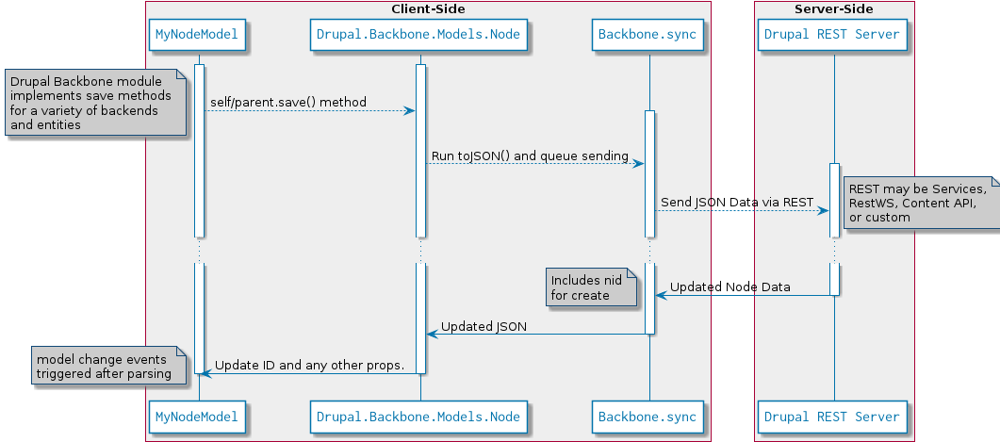
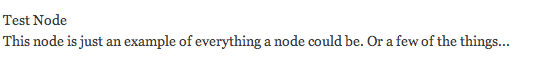
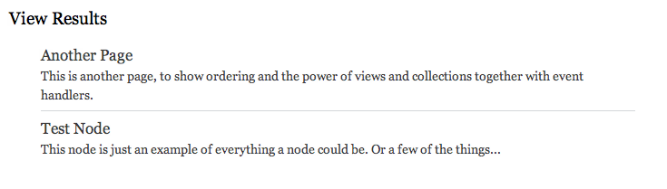

Using the Drupal Backbone Module
Ethan Winn - ethanw/@eethann/ethan@echoditto.com
a.k.a "A Deep Dive Into the Shallow Side of the Pool"
First: A Simple Drupal + Backbone Demo:
The Classic: Todo
By Stein Setvik (setvik) of Forum One
Do not forget the enemy:

@searls: https://speakerdeck.com/u/searls/p/confidencejs
Backbone Can Help
Let's break it down
- Requesting
- Rendering
- Responding
1. Requesting
Load a node!
Create a node & save it:
...or users, or comments, or flags, or...
Behind the Scenes: Saving
Behind the Scenes: Loading

Backbone.sync can point to anything:

Example: Archive.org Integration
Thanks EchoDitto for supporting this module development!
2. Rendering
...client-side!
With a twig.js template
(handlebars or _.js also work)
And a Backbone View:
Voilà: HTML!
Views can refresh automatically
3. Responding
Backbone Views also handle User Events
We just add a button to our node template
And add a listener in our view
Plus: 4. Collections!!

Load lots of nodes!
Rendering lots of nodes: the "Collection View" pattern
Another simple template
And a Backbone View (a)
and (b)
DRY: We re-use our node template
Item events work in collections!
Backbone is all about delegation
The Drupal Backbone Stack

Setting up our Backbone Module
Menu Callback: App Path
Page Callback: Includes Backbone Lib and App JS
JS: Use Behaviors for App
Make a root element for our app
Use the theme layer for templates
Added advantage that we can use t()
One more demo...
ShotClip
By Cormac McGuire (cromac) / Studio Rua
WAIT!
We want to know what you thought about this session:
Find this session on the DrupalCon Munich site:
http://munich2012.drupal.org/program
And click the "Take the Survey" link.
(and message us on Drupal.org or Twitter!)